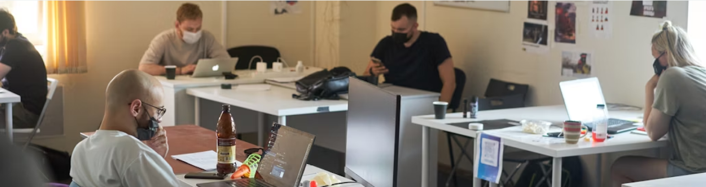

Coworking Space
| Kosten | €€ - €€€ (Dagpas of abo) |
|---|---|
| Focusniveau | Hoog |
| Sfeer | Professioneel & Sociaal |
| Voorzieningen | Uitstekend |
| Netwerkkansen | Hoog |
| Best Geschikt Voor | Volledige werkdagen, community en netwerken. |

Genoeg geklaagd over wat niet werkt. Laten we ons richten op de oplossing. Er is een groeiend ecosysteem van werkplekken die speciaal zijn ontworpen voor de moderne professional. Van bruisende community hubs tot oases van rust: dit zijn de beste alternatieven.
| Kosten | €€ - €€€ (Dagpas of abo) |
|---|---|
| Focusniveau | Hoog |
| Sfeer | Professioneel & Sociaal |
| Voorzieningen | Uitstekend |
| Netwerkkansen | Hoog |
| Best Geschikt Voor | Volledige werkdagen, community en netwerken. |
| Kosten | Gratis |
|---|---|
| Focusniveau | Maximaal |
| Sfeer | Stil & Academisch |
| Voorzieningen | Goed tot Uitstekend |
| Netwerkkansen | Laag |
| Best Geschikt Voor | Urenlange 'deep work', schrijven en studeren. |
| Kosten | € - €€ (Prijs van een drankje) |
|---|---|
| Focusniveau | Gemiddeld tot Hoog |
| Sfeer | Luxe & Comfortabel |
| Voorzieningen | Zeer Goed |
| Netwerkkansen | Gemiddeld |
| Best Geschikt Voor | Werken in stijl, belangrijke calls en comfortabele sessies. |
| Kosten | €€€ (Huur per uur/dag) |
|---|---|
| Focusniveau | Maximaal |
| Sfeer | Zakelijk & Functioneel |
| Voorzieningen | Uitstekend |
| Netwerkkansen | Laag |
| Best Geschikt Voor | Vertrouwelijk werk, team-sprints en maximale privacy. |
Beschrijving: Professioneel ingerichte kantoren met flexibele lidmaatschappen. Alles is aanwezig: van snelle wifi tot vergaderruimtes en goede koffie.
Best geschikt voor: Freelancers die structuur, community en netwerkkansen zoeken. Ideaal voor een volledige, productieve werkdag.
Beschrijving: De traditionele plek voor stilte en concentratie, maar dan in een modern jasje. Veel bibliotheken hebben nu aparte werkzones met stroompunten en goede wifi.
Best geschikt voor: Schrijvers, onderzoekers en iedereen die urenlange, ononderbroken focus nodig heeft voor 'deep work'.
Beschrijving: De openbare ruimtes van (zaken)hotels zijn vaak oases van rust met comfortabele stoelen, goede service en een professionele sfeer.
Best geschikt voor: Belangrijke klantgesprekken, werken in stijl, of wanneer je een comfortabele en rustige omgeving zoekt zonder de verplichtingen van een coworking.